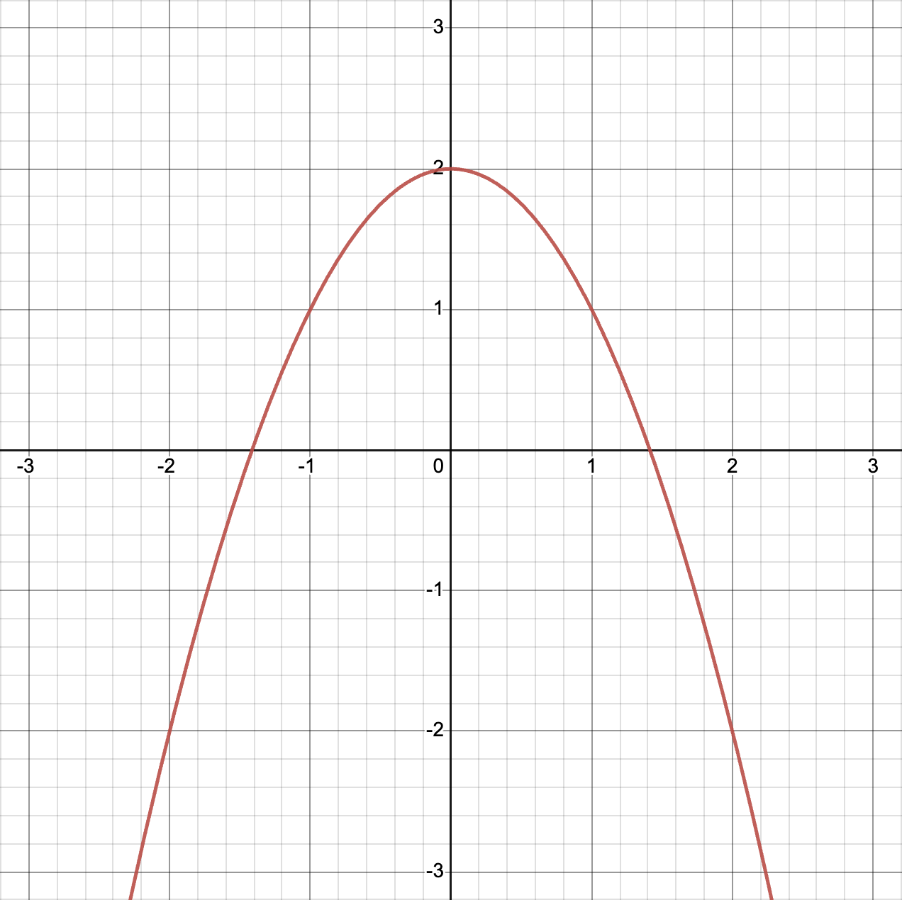
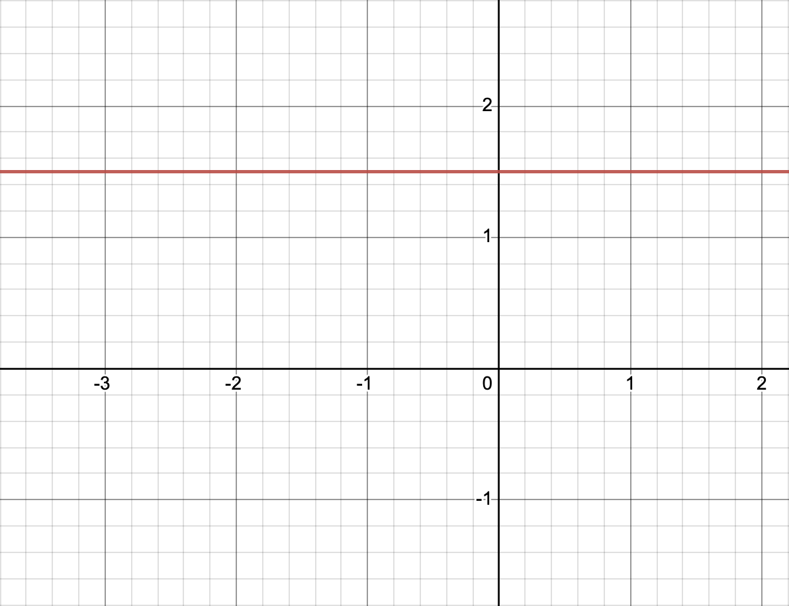
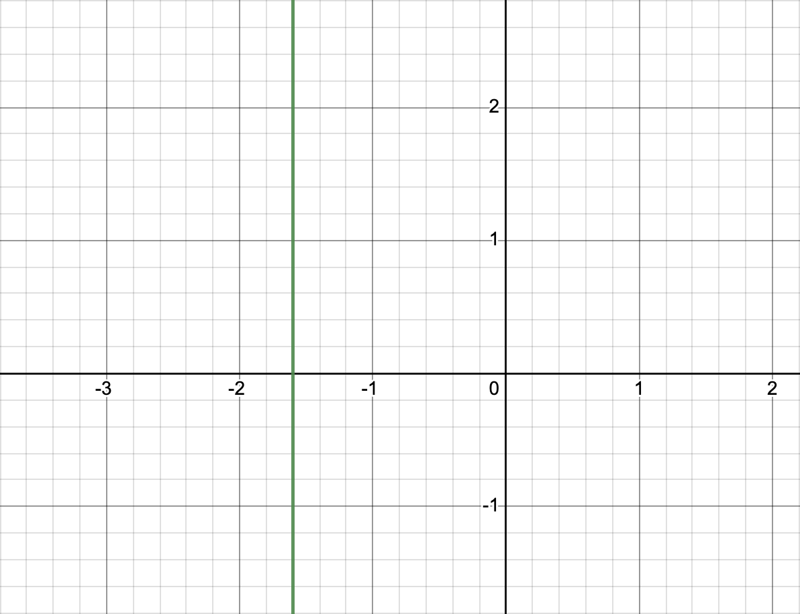
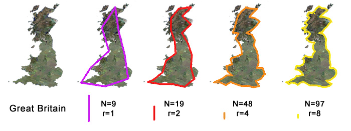
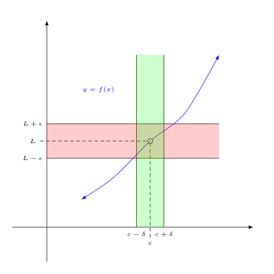

This will give you a brief overview of calculus. This will not replace your calculus textbook. This will help you understand what you are learning in class, and why. When I first learned calculus we focused on the mechanics of solving problems. I wish we’d spent more time discussing why we were learning these things and what they meant.
You need to remember some algebra to understand this document. Here is a quick refresher of the relevant facts. You will need a lot more algebra when you are ready to actually solve calculus problems.
You should be familiar with graphs of functions. Graphs are the easiest way to explain and understand calculus.
2 - x2 Click on any graph
for an interactive version.
The dark horizontal line is called “the x axis.” The numbers along this line are the inputs to the function. These are often things that you can change.
The dark vertical line is called “the y axis.” the numbers along
this line are the outputs from the function. If you give your computer or
calculator an input to a function, it can compute the output of that
function. Sometimes we write f(x) (and say say “F of X”)
instead of “y.”
Slope is defined as “rise over run.”
f(x) = 2x ÷ 3
In graph above you can see that the function moves
2 units up every time it moves
3 units to the right. So the slope is 2 ÷ 3, or ⅔.
f(x) = 2x ÷ 3
You could also say that the function moves
4 units up every time it moves
6 units to the right. And it moves
6 units up each time it moves
9 units to the right.
2 ÷ 3, 4 ÷ 6, and 6 ÷ 9 all give
you the same answer, ⅔.
In the next graph notice that
g(x) = 2x ÷ 3 + 1
has different values than
f(x) = 2x ÷ 3,
but they both have the same slope.
f(x) = 2x ÷ 3
and
g(x) = 2x ÷ 3 + 1
The next graph shows a line going down, so it has a negative slope. You
can see that the function moves
2 units down
every time it moves
3 units to the right. So the slope is (-2) ÷ 3, or -⅔.
f(x) = -2x ÷ 3A horizontal line has a slope of 0.
f(x) = 1.5
In this case the “rise” will always be 0. The “run” can be any number I
choose, let’s say 42. 0 ÷ 42 = 0 So the slope is 0.
If the line is vertical, its slope is undefined.
x = -1.6In this case the “run” is always 0. And anything ÷ 0 is undefined. (Or is it? Keep reading!)
Limits are a way to divide by zero and otherwise make infinity work for you. In calculus class you will learn a more precise definition of limits, and a lot of rules to help you compute them. You might have to use limits directly to solve some problems. Mostly you learn about limits so you can understand the definitions of derivatives and integrals, described below.
Calculus focuses on smooth functions. There is a formal definition of smoothness, but your intuition is right. Let’s look at some examples.
2 - x2 (2 minus x squared)
is smooth everywhere.
2 - x2
|x| (the absolute value of x) is smooth everywhere except at
x = 0.
|x|
n! (n factorial) is not continuous, so it can’t be smooth.
n!If you zoom into a smooth function enough, it will eventually look like a straight line. That makes the function very easy to predict.
Smoothness is the opposite of a fractal. If a function looks like the Mandelbrot set, you probably can’t apply calculus to that function. No matter how much you zoom into the Mandelbrot set you’ll always find places where it is not smooth.

The same goes for the natural fractals, like the coastline of Britain. No matter how much you zoom in to a natural coastline, you will always find more details. It will never look like a straight line. It will never be smooth.

Let’s look at the function
f(x) = x3 ÷ x. Naively you
might simplify that to x2. That’s almost right, but remember that you are not allowed to divide by
zero. So you should really say
x3 ÷ x = x2, but only when x ≠ 0.
x3 ÷ x is
undefined when x = 0.
x3 ÷ x Notice the open
circle at x=0.
In simpler terms,
x3 ÷ x looks a lot like
x2, but x3 ÷ x has a hole it
it!
x2
If you only had the first graph, you could probably guess what the second graph looked like! You could fill in that hole with anything you want, but only one value would make the function smooth. Congratulations, you just computed a limit! Calculus class will teach you when it is okay to use the complete version of the function, rather than the original version with the hole.
If you see delta and epsilon in a problem, it is probably talking about limits. These are written with lowercase Greek letters: 𝛿 and 𝜺.

A derivate is a rate of change. For example, let’s say
f(x) tells us the total number of cookies in your house at a
given time. Then the derivate of f(x) tells us how quickly
you are eating those cookies or baking new ones.
The graph above shows that the number of cookies goes down over time. That
means someone is eating your cookies! The graph would go up if you baked
or bought more cookies. Also notice that f(x) is
continuous and smooth. That means that someone is eating a
little bit of a cookie at a time, continuously. Alternatively, what if
whole cookies were disappearing at once? Then the graph might look like
this:
This function is not smooth everywhere. We can only talk about the derivative where it is smooth. Where it is not smooth, we say the derivate is not defined.
Our cookie example is a straight line. The derivative of a line is the slope of the line. In this case someone is eating one cookie per minute. The rate of change is -1 cookies per minute.
The following example is a little more complicated. You could say that the average rate of change for the first 5 minutes is -1, just like the previous graph. That’s correct, but it’s leaving out a lot of details.
Let’s examine the graph in pieces:
The following graph shows the derivative of the previous graph. Notice that the derivative is only defined where the original function is (a) defined, (b) continuous, and (c) smooth.
That last example was a little too contrived. Let’s go back to a parabola. What’s the derivative of x2 ÷ 2?
x2 ÷ 2
I’ll start by drawing some line segments to create a simple approximation of this parabola. I’ll draw one point at each integer value of x.
x2 ÷ 2 in red,
approximation in green
You know how to take the derivate of a series of line segments. Just like in the previous section, you need to plot the slope of each line segment, and draw an empty circle anywhere the slope changes suddenly. That will give you a graph like this for the derivative x2 ÷ 2.
x2 ÷ 2
And you can break up the parabola any way you want. What if you asked for twice as many line segments? Then the answers would look like the next two graphs.
x2 ÷ 2 with a
better approximation
x2 ÷ 2
Is it reasonable to approximate a parabola with a lot of line segments? Yes! Remember what you saw in the zooming in demo, above. As we zoom in, any one part of a smooth function will look more and more like a straight line.
As you look at smaller and smaller sections, you see more and more detail. How small can we make the sections?
x2 ÷ 2 covered by an
even better
approximation
x2 ÷ 2
As the line segments get smaller and
smaller, our results get more and more precise. What if we asked about a
change of exactly 0? Every time x moves 0 units to the right,
x2 ÷ 2 moves 0 units up. And
0 ÷ 0 = what?
The orange line, above, shows the actual derivative of the function, and the blue lines show our approximation of the derivative. No surprise: our approximations were getting closer and closer to the right answer. Also notice that we have more open circles (unknown values) as the approximations get more precise.
Can we really jump from an infinite number of open circles to a solid
line?
Yes.
That may look intimidating now, but by the time you get to this you will
already be a master of limits. When you work out the problem in
class you’ll eventually learn that the derivative of
x2 ÷ 2 is x,
matching the graph. Along the way to x you’d see something
like (0 ÷ 0) + x + 0. Because you will have the power of
limits you can simplify that to x without being afraid to
divide by 0.
This first example highlights the position, velocity, and acceleration of a pendulum. As you can see, they are clearly related.
Velocity is the derivative of position. The velocity arrow points in the direction that the pendulum is moving. The velocity arrow disappears, and the velocity becomes 0, each time the pendulum changes direction. The position of the pendulum is changing fastest when the pendulum is in the middle, so the velocity arrow is the biggest at that time.
Acceleration is the derivative of velocity. Notice how the acceleration arrow acts similar to the velocity arrow, but the acceleration arrow is slightly in the lead. And notice how the velocity arrow is similar to the position arrow, but the velocity arrow is slightly in the lead.
Let me plot those arrows on the graph below. The vertical line shows the current time. Up 👆 on the graph corresponds to an arrow pointing right 👉 on the image.
The graph shows that all three functions are actually sine waves. The only difference between them is that they are offset from one another. In the proper terminology, they are out of phase from each other.
Let’s turn that last physics experiment on its side.
A mass on a spring acts very similar to a pendulum. Once again we use a sine wave as a very good approximation of the position of the mass. So the math will be the same. A mass on a spring problem is just a pendulum problem in disguise.
The red line shows the position of the mass. Notice how the mass moves up when the slope of that graph is positive. When the mass changes direction, the slope of that graph is 0. When the mass is moving down, the slope is negative. Rate of change = slope of graph.
Pay attention when your teacher explains the calculus of sine waves. This subject is important and it comes up a lot in math and physics. Here's one more example.
In this case you are watching an electron bouncing around a circuit. But the math is the same. We talk about charge instead of position. And the derivative of charge is current, instead of velocity. Charge, current, and the derivative of current will all be sine waves, as in the previous examples.
I should remind you that these are simple approximations. This is as far as you will get in highschool calculus. If you want to learn about friction and resistance you’ll need to wait for differential equations class. Until then you live in a safe and magical world with perpetual motion.
Interest is money the bank puts into your bank account. Your account balance will change over time because the bank is adding money.
If f(x) represents your bank balance, then the derivate of
f(x) says how quickly the bank is adding money.
Bankers often quote interest rates in different ways. They might quote a rate for a year. But they add money more than once a year, and the rate constantly changes.
Sometimes they talk about interest “compounding” yearly, quarterly, monthly, daily or continuously. “APR” is banker-speak for “continuously.” That’s the same approximation that we did above. The smaller the time span you look at, the closer you get to the ideal or continuous value.
There are more details, of course. I’ll leave those to your teacher.
Pay particular attention when you get to
ex!
The derivative of f(x) is often written as
f′(x), pronounced “F prime of X.”
The derivate of y is often written as dy / dx, pronounced
“the derivate of y with respect to x.” It can also be written as
y′.
You may hear the term “tangent line.” A tangent line is a slight variation on what I discussed in Really Small Pieces, above. Start from any one of those really small line segments. Extend it forever in both directions so it’s easy to see the slope of that line segment. The graph below shows multiple tangent lines. Notice how each tangent line touches the parabola at exactly one point. That point is where the original tiny line segment is. The derivative at any point on a curve is the slope of the tangent line at that point.
2 - x2 with tangent lines
When you see the ∫ symbol, that means to take the integral of a function.
Integration and differentiation are inverses of each other. If g(x) is an integral of f(x) then f(x) is the derivative of g(x).
That applies to all of the examples above. E.g. Position is the integral of speed.
How did ships know their position before GPS was invented? One way is called dead reckoning. From time to time they would measure their speed. They would multiply each speed measurement by the amount of time until the next measurement, then add all the values together. That’s the inverse of what we did in the derivative examples, above.
The x axis represents time. The y axis represents distance. Slope represents speed. If you know the speed and time, you can easily compute the distance.
Each pair of arrows represents one measurement. The position of the pair represents the time the measurement was taken. The direction each arrow points shows the result of the measurement, i.e. the speed of the boat. Notice:
The more often the sailors measured their speed, the more accurate their estimate would be. If they could measure their speed constantly, they would know exactly where they were.
But that’s tricky. If they measure the speed constantly, they will have an
infinite number of distances to add up. And each distance is a speed times
a time, and the times are all 0. If you’re not careful you’ll get
∞ ⨉ 0. But by this time you’ll be an expert at limits, so you
will know how to get a real answer.
How do you calculate an integral? One method is to look at all of the
rules for computing derivatives, and to invert each of them. For example,
we saw above that the derivative of
x2 ÷ 2 is x. So
any time you have to integrate x, you can look that up in
your list and say an answer is
x2 ÷ 2.
An answer. Remember, a derivative is just a fancy version of a slope. And as we saw above, more than one line can have the same slope. So more than one function can have the same derivative. So each function will have multiple anti-derivatives.
The short version is that you need to write + C at the end of
your answer. So the integral of x is
x2 ÷ 2 + C. Your teacher
will take off a lot of points of you forget the + C!
C is any number. That means that
x2 ÷ 2,
x2 ÷ 2 + 2, x2 ÷ 2 + 3,
x2 ÷ 2
+ 34,567.89, x2 ÷ 2 + π, x2 ÷ 2 - 27, etc., are all valid integrals of x.
This method is nice because it gives you a formula for an exact answer. However, this method can be difficult in some cases and impossible in others.
The previous section begs an important question. Are you expecting the answer to be a number or should it be a formula?
If you see a problem like ∫ 2x dx, that’s called an
indefinite integral. The answer should look like
x2 + C, as described above.
What if you wanted an exact value? You can’t just plug in a number for
x. Remember, C can be any number, so
x2 + C can be any number.
That’s not very helpful!
Back to our boat example: What if we add up all of our measurements and
got a total of 10 miles? That means the boat moved 10 miles. But
that doesn’t tell us the position of the boat. There could be two
or more boats all going the same speed, but if they start at different
positions they will end in different positions. Crudely speaking,
C corresponds to the initial position of the boat.
In practice, if you want an actual number from an integral, you will use what’s called a definite integral. A definite integral looks just like an indefinite integral, except that the problem will specify a start value and an end value.
In our boat example, you might ask how far did the boat move between 10am
and 10:05. In our 2x example you might ask what’s the
integral of 2x between x = 3 and
x = 7. Those problems are both definite integrals.
If you know the indefinite integral of a function, then it is
trivial to compute a definite integral of the same function. You
compute the indefinite integral at the start and end values, and
you subtract the second from the first. What’s the integral of
2x between x = 3 and x = 7? Start
with x2 + C. For the end
value we get 72 + C and for
the start value we get
32 + C. So the answer will
have to be
(72 + C) - (32
+ C). The C’s cancel out to give us
72 - 32
or 49 - 9 or 40.
A different way to think about an integral is the area under the curve.
Same problem: What’s the integral of 2x between
x = 3 and x = 7?
Let’s start by graphing 2x and marking x = 3 and
x = 7 on the same graph. The area I’ve highlighted in green
is the answer we want. You could measure that with a ruler! Or you could
notice that it’s a trapezoid, and Google “area of a trapezoid” if you
don’t remember that formula. Or break it into a triangle and a rectangle
if that’s easier.
Notice that when the original function is below the x axis, we subtract that from the total area.
What if the function we are integrating is more complicated than a line? Break it into smaller pieces. Compute each piece separately then add them up. Like we’ve been doing!
What if the function we are trying to integrate is a curve, not a set of line segments? Break it into small pieces then add them up. How small? It depends how accurate you want your estimate to be.
But this method is not just for estimates. If you take the limit as the pieces get infinitely small, that will be the exact answer.
The formal definition of an integral involves an infinite sum. And that’s exactly what we did with the dead reckoning example, and with the area under the curve.
That was a quick tour though a full year’s worth of calculus! There’s no need to memorize anything. But keep this handy while you study calculus.
Enjoy your studies. I’m just scratching the surface of what you will learn in class. I am Philip Smolen writing this for the Summer of Math Exposition 3 contest. Check #SoME3 for other entries. Check behind the scenes of my project for even more interesting math.
Click on the images for attribution and other details.
ex
and sin(x).
+ C.
As you decide who is worthy of receiving a golden pi creature, you should know that I have experience in the care, display, and maintenance of soft, math-related sundries.
I taught myself to crochet for the sole purpose of touching the hyperbolic plane. I've also made Möbius strips and other interesting shapes from crochet. I can provide a loving and nurturing home for a golden pi creature.